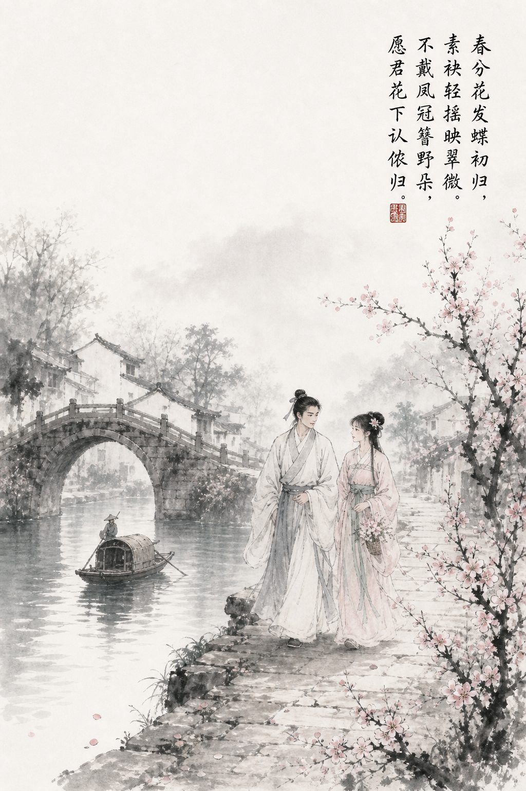
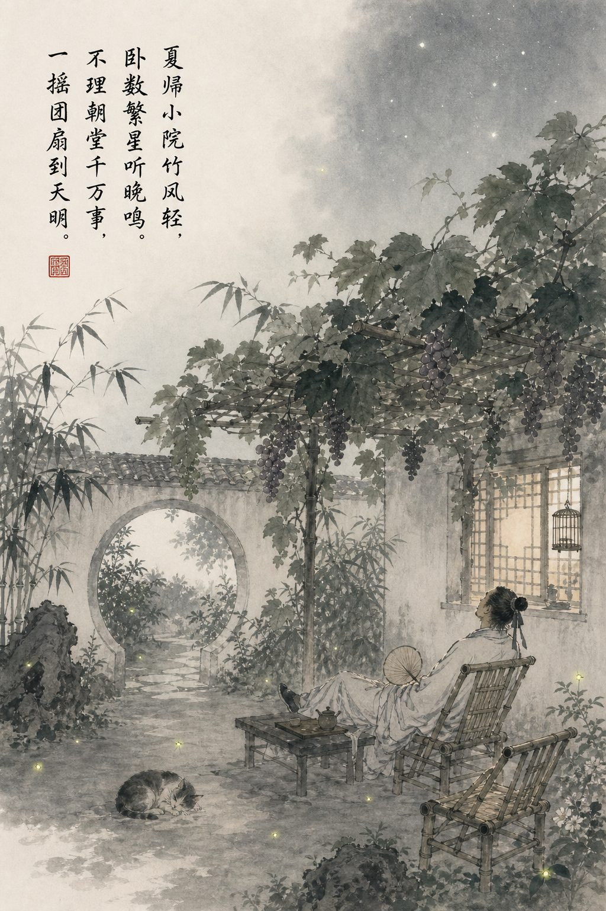
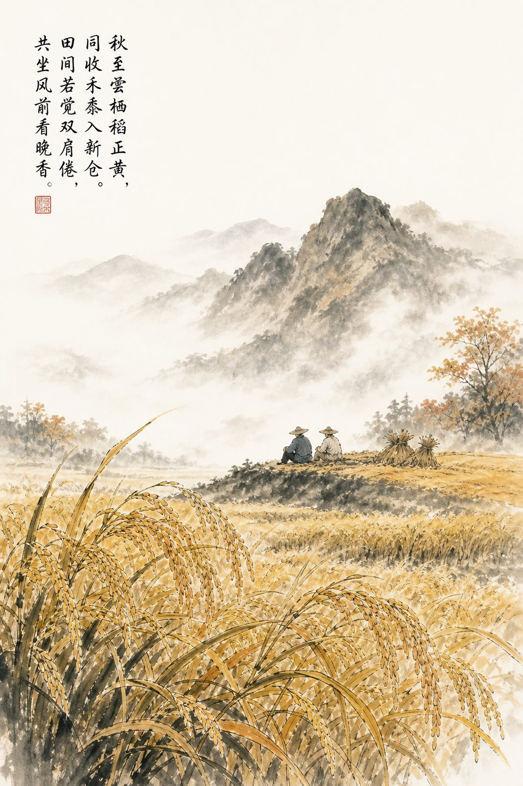
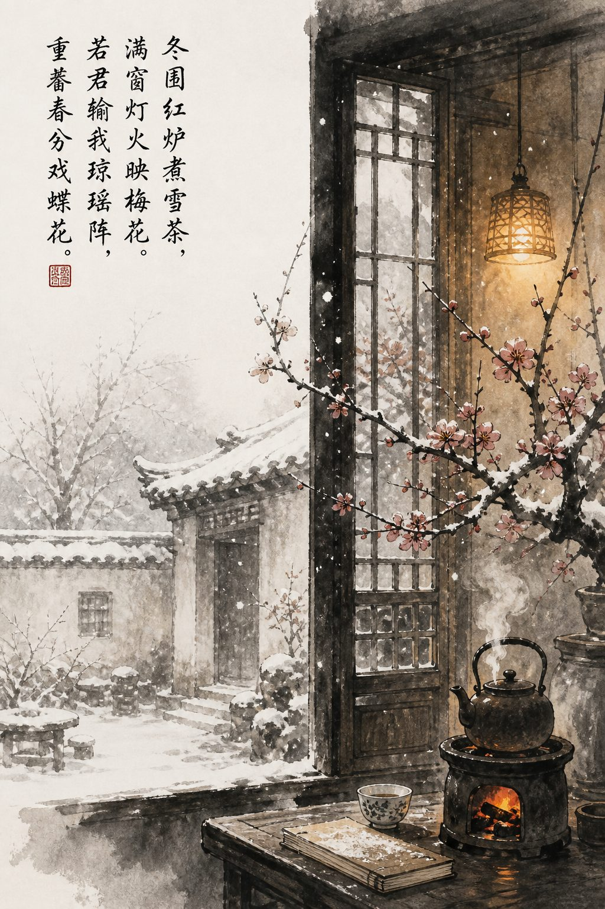

正如诗中所说，这世间纵有千般风景，也比不上有你陪在我身边。
武宁，那天我真的好懊悔，也好难过。
看到你倒在我面前的那一刻，我仿佛也跟着失去了所有力气。我还没有替你画完那幅《春分戏蝶图》，还没有接你出宫，还没有带你看遍大好河山。
你就像我生命里最后的一点火光，在我眼前慢慢熄灭。
那之后的几天，我仿佛一直被困在黑暗里。明明一切都已经尘埃落定，我终于可以只做林江，你也终于可以只做武宁。
我原以为，我们的故事才刚刚开始。
却没想到，一切竟像是要在这里戛然而止。
不过，还好你没有死。还好你没有死。
还好，你终于回到了我的身边。
再次见到你的时候，我几乎不敢相信自己的眼睛。你和公主殿下当真把我骗得好苦。
可我一点也不怨你。
只要你还活着，只要你还能站在我面前，只要你最终还是回到了我的身边。
我曾答应过你，要带你远走高飞，我的林夫人。
所以往后的日子里，我们要去很多很多地方。
你喜欢诗，也喜欢画。那我们每到一个地方，我便为你写一首诗，再陪你画一幅画，把我们走过的山川、见过的花月，都一一留在纸上。
春天，你想去江南。
我们便乘一叶小舟，顺水而下。去看杏花烟雨，去走青石小巷，去看春风吹开满城花枝。

那时的你不必再戴凤冠，也不必再守宫中的规矩。
你只需要在鬓边簪一朵喜欢的花，站在春风里等我。
无论人群多么拥挤，我都会一眼认出你。
夏天，我们便回到自己的小院。
院中种几株花，再搭一架葡萄藤。白日里躲在树荫下喝茶，傍晚便并肩坐在竹椅上纳凉。
我们一起数星星，听虫鸣。
没有宫规，没有奏折，没有早朝，也没有人再来打扰我们。

你若困了，便靠在我肩上睡一会儿。
我替你摇着扇子，守着满院清风，也守着你。
秋天，我们去云栖谷。
我从前在那里见过百姓饿肚子，也见过流民四处逃窜。等到秋收的时候，我们便一起去帮他们割稻，把一捆捆粮食收进仓里。
你若嫌手脏，我便替你擦干净。
你若觉得累了，我们就坐在田埂上歇一歇，看风吹过稻田，看沉甸甸的稻穗一层一层弯下腰。

或许衣裳会沾上泥，手上也会留下细小的伤口，可只要百姓不再挨饿，只要你坐在我的身旁，那便是这世上最好的秋天。
冬天，我们就留在小屋里。
窗外落雪，屋内围炉煮茶，煮得满室都是暖融融的热气。
你若手冷，我便替你暖。
我若手冷，你也得替我暖。
等雪停了，我们便去院子里打雪仗。你若输了，就把那幅《春分戏蝶图》重新画一遍。
若是我输了，我便再为你写一首诗。

一年四季，其实也不必多么轰轰烈烈。
春日看花，夏夜听蝉，秋时收稻，冬日煮茶。
简简单单，平平安安，就已经很好。
我从前想要改变天下，想要救许多人，想要完成许多大事。
可到了最后，我才明白，我真正想要的，不过是和你有一处小院，有一盏灯，有一张可以一起吃饭的桌子。
清晨醒来时，你在身旁。
日暮归家时，你在等我。
一生一世一双人，朝夕相守，岁岁不离。
武宁，往后的山河岁月，
我都想与你一起走过。